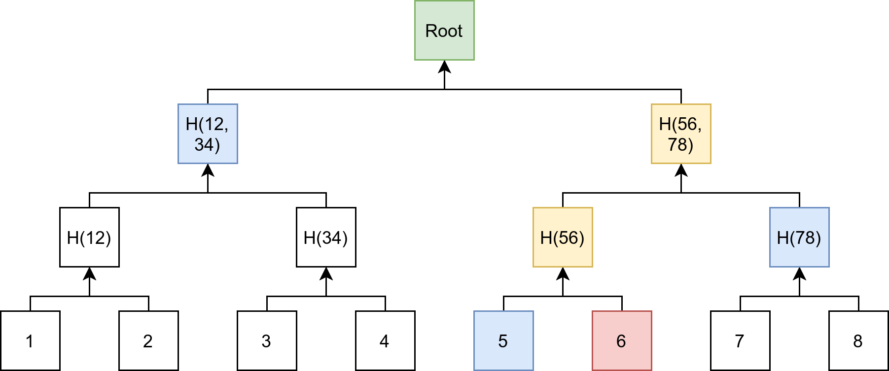

{kind=link}

A Merkle Tree is a data structure that is used in Peer-to-Peer Networks. It is a binary tree in which the value of an inner node is the hash of its child nodes. The root node of that tree is called “Merkle root” or “root hash”.
So much about the definition. To me, it’s always helpful to know the problem a technology solves to really understand it.
BitTorrent
How do you send big amounts of data over a network which randomly introduces errors? When you just send a stream of data, you cannot guarantee the integrity.
The first improvement is to add the value of a hash function: The 3 Applications of Hash Functions What they are, what the options are, and why they matter
If the hash value of the downloaded file is not equal to the expected hash value, you just download the file again.
It should be clear that this is inefficient as errors happen rarely. Very likely, most of the file is completely fine. Maybe there is just a single bit that flipped its value. You want to download as little as possible and just fix the broken part.
{kind=link}
The next idea is to build blocks. You store the hash of each block. When you download the file, you first download a header. The header contains meta-information, e.g. the total number of blocks, the hash of each block, and a hash of the metadata itself. If the metadata block is broken, you download it again. Then you download each block and verify it. If a block is broken, the block is downloaded again.
Now the question is which block size makes the most sense. The smaller the block sizes, the less you have to download in case of an error. But the more blocks you have, the more metadata you need to store. Take the most extreme case: Every single bit has its own hash value. A typical hash value has 256 bit. This means the total size would increase by a factor of 257! In other words: You could download the file 257 times instead.
Let’s say the file we want to download has a size of 4 GiB. Then the following table gives the number of blocks and the additional size you have to download. If you make the blocks of size 32 Byte for a 32 Byte hash, you need to download double the data. This means additionally 100%:
block size : blocks additional download size
-------------------------------------------------------
32 Byte: 134,217,728 100.00%
128 Byte: 33,554,432 25.00%
512 Byte: 8,388,608 6.25%
1 KiB : 4,194,304 3.12%
256 KiB : 16,384 0.01%
1 MiB : 4,096 0.00%
The torrent files of BitTorrent are essentially dictionaries with this information:
{
"announce": "tracker url",
"info": {
"length": "file size in bytes",
"name": "suggested file name",
"piece length": "typically 256 KiB",
"pieces": [
"sha-1 hash of block #1",
"sha-1 hash of block #2",
"sha-1 hash of block #3"
]
}
}
To summarize: A list of hash values of blocks can speed up the download of files over an unreliable network a lot.
Note that BitTorrent v1, as shown above, uses a flat list of piece hashes, which is not a Merkle tree yet. BitTorrent v2 (BEP 52) uses a Merkle tree of the block hashes for every file. This allows verifying single blocks with a short proof, as explained in the next section.
Proof of Inclusion
Suppose you wanted to show that a piece of data is part of your data structure. This is easy with Merkle trees.
Merkle trees allow you to prove that a transaction is included. Suppose Alice wants to prove to Bob that transaction T happened. To do that, she provides:
- The transaction itself, for which Bob can easily create a hash.
- All hashes which are missing to calculate the root hash
Bob then has to verify that the Merkle root is equal to the root he has. He also needs to hash the transaction and build all hashes up to the Merkle root. As cryptographic hash functions make it practically impossible to forge data with the same hash (second-preimage resistance), Bob does not have to have all the data. It’s enough to know which root to use.
The supplied hashes (the blue nodes) are called a Merkle proof. You prove that the data belongs to the Merkle tree. If you want to see another example, have a look at Belavadi Prahalad's article Merkle proofs explained.
In the context of Bitcoin, this is called Simplified Payment Verification (SPV). It’s chapter 8 of the Bitcoin paper, or SPV proofs explained by Albert Acebrón.
How does Bitcoin use Merkle Trees?
Every single block contains a Merkle tree of transactions. The Bitcoin blocks have a size limitation of 4 million weight units (since SegWit; this is about 1–4 MB, depending on the transaction types) for various reasons. Only the Merkle tree's root hash is used to hash the block. This means that Bitcoin nodes can throw quite a bit of data away and still compute the same hash.
Applications of Merkle Trees
- Git uses a hash tree to store its data (source). If you want to understand why, read Towards Reproducibility: git by Martin Kavalar
- Database Systems: Apache Cassandra uses Merkle Trees to detect inconsistencies in replicas (source, video)
- Bitcoin & IPFS, and Storj: The core data structure to store data
- Ethereum also uses a Merkle Tree, but a different type than Bitcoin. Ethereum uses a Merkle Patricia Trie.
See also
- Tara Vancil: How Merkle Trees Enable the Decentralized Web!, 2017 on YouTube.
- Gaurav Sen: Merkle Tree with real-world examples, 2019 on YouTube.
More in this series
This article is part of my series about Blockchain:
- Part 1: An Introduction to Blockchain
- Part 2: The 3 Applications of Hash Functions
- Part 3: Merkle Trees
Topics I will consider next:
- Merkle Patricia Tries
- Public-Key Cryptography and RSA: Public- and private keys, Digital Signatures, Trapdoor functions. What it is and why it’s so important
- Proof of Work: How it works, how difficult it is, and what Bitcoin / Ether / Stellar use.
- Smart contracts: What they are and how they work; e.g. with Ethereum as an example
- Initial Coin Offering (ICO)
- Bitcoin's consensus algorithm
- Bitcoin and the network: How do people connect?
- Bitcoin Wallets
- Peer-To-Peer Stuff: How Gossip Protocols work
Let me know what you’re interested in!